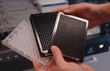
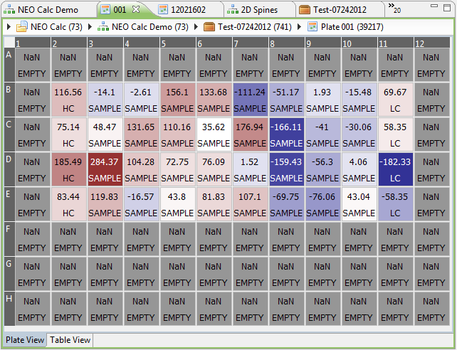

The plate is the most fundamental concept of all: it is the digital representation of the microtiter plate that is being screened in a screening assay. The term "plate" is sometimes used loosely to represent different things, but in Phaedra its definition is: a plate is a collection of wells, organized in a two-dimensional layout.

The most common visualization for a plate is the heatmap:
